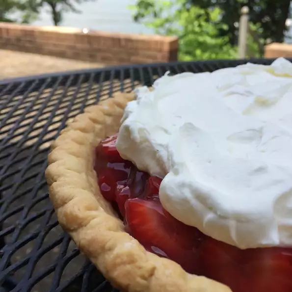

STRAWBERRY PIE

Description:
A spin on a favorite from Strawn's Eat Shop in Shreveport, Louisiana - best fresh fruit pies ever! Plan to share this strawberry pie - it's best within about 24 hours of making it - or put on your stretchy pants and eat the whole thing yourself. You may or may not be sorry.
Ingredients:
- ¾ cup white sugar
- 3 tablespoons cornstarch
- 1 pinch salt
- 1 cup water, divided
- 3 tablespoons lemon juice
- ½ teaspoon almond extract
- 3 drops red food coloring, or as desired (Optional)
- 3 drops red food coloring, or as desired (Optional)
- 3 cups fresh strawberries, sliced
- 1 (9 inch) baked pie crust
- 8 ounces heavy whipping cream
- 3 tablespoons confectioners' sugar, or to taste
Steps:
- Stir sugar, cornstarch, and salt together in a medium saucepan. Add 3 tablespoons water and mix into a paste.
- Bring remaining water to a boil in a pot. Add to sugar mixture slowly. Let mixture simmer over low heat, stirring constantly, until thick and clear, about 5 minutes. Remove from heat. Add lemon juice, almond extract, and red food coloring.
- Let mixture cool for at least 15 minutes; fold in strawberries. Pour into the prepared pie crust. Chill until set, at least 1 hour.
- Whip heavy cream in a mixing bowl using an electric mixer; add confectioners' sugar slowly until combined. Spread topping over chilled pie.